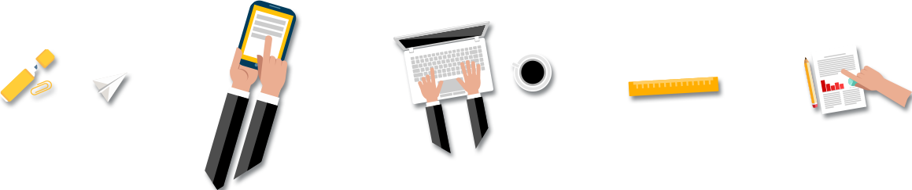

关注优邻
| 邮箱： | zhognkefangde-youlinapp.com | 地址： | 北京海淀区中关村南大街乙中国科学软件园 |
| 电话： | 010-12345678 | 邮编： | 100000 |
中科方德软件有限公司是基础软件国家工程研究中心的项目法人单位。基础软件国家工程研究中心（以下简称“工程中心”）是国家发展改革委员会批复（发改高技[2005]425号）由中国科学院软件研究所负责组建的基础软件领域唯一国家级工程技术研究中心。中科方德总部设在北京，并先后在无锡、重庆、哈尔滨等地设立有分公司，公司总部及其投资控股的注册总资金近2亿元人民币，现有员工1000余人，形成了一支以科技专家为骨干、年轻的博士硕士为主要一线研发人员的基础软件高端软件研发的工程技术研发队伍。
人怀壮志江山秀，蛇报新春世纪新！ 2013年1月6日，中科方德软件有限公司2012年年会在中科院中关村软件园区5号楼大报告厅隆重举行。年会上王继喆总裁对2012年的工作进行了总结，在2012年在公司同仁的共同努力下，公司在新产品研发、行业领域应用、市场开拓等方面都取得了可喜的发展，取得了满意的经营业绩；同时对公司2013年的经营目标规划得任务。
